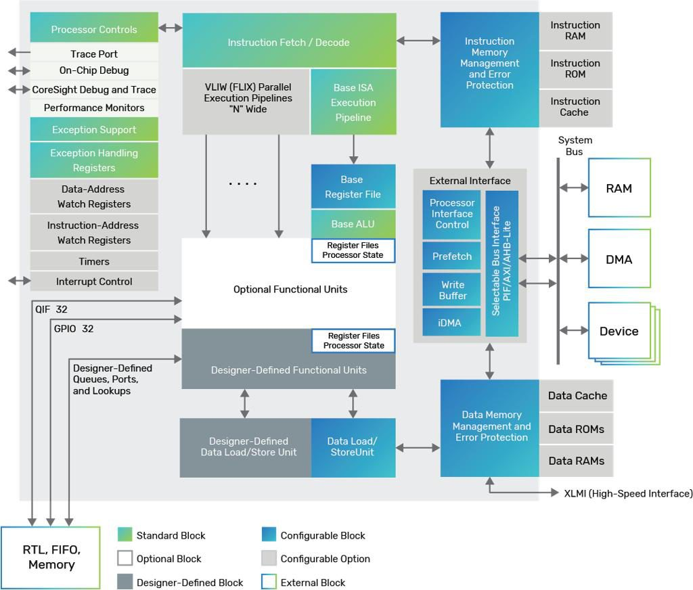
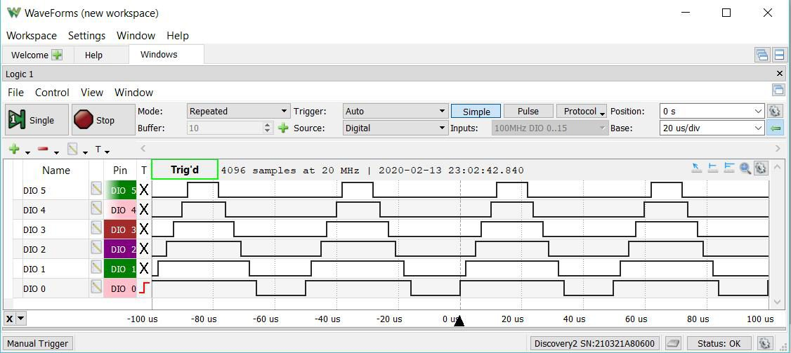

第三课：XIAO ESP32S3 的 CPU、寄存器、中断和时钟原理
这一课开始进入真正的单片机底层开发。
前面我们已经了解了 GPIO、通信接口、FreeRTOS 和 ESP-IDF。现在要进一步理解：
- CPU 是如何执行一条指令的？
- 寄存器是什么？为什么 CPU 需要寄存器？
- 中断是如何让芯片及时响应外部事件的？
- 时钟如何决定 CPU 和外设的运行速度？
- ESP-IDF 如何把这些底层硬件机制封装成开发接口？
- 在 XIAO ESP32S3 上如何编写、运行和调试相关代码？
本课以普通版 XIAO ESP32S3 为目标，使用 ESP-IDF 和 C 语言作为主要开发环境。
一、CPU 的硬件结构和工作原理
1. ESP32-S3 使用什么 CPU？
XIAO ESP32S3 使用 Espressif ESP32-S3 芯片，其 CPU 是：
Xtensa LX7
双核 32 位处理器240
MHz 最高主频240
MHz 最高主频两个核心可以同时执行不同任务，但不代表所有程序都会自动平均分配到两个核心。
例如：
- Core 0 可以运行部分系统和网络相关任务。
- Core 1 可以运行应用层的传感器处理任务。
- 两个核心也可以共同参与应用程序工作。
具体分配由 ESP-IDF、FreeRTOS 的任务调度和核心亲和性决定。
2. CPU 内部到底有什么？
可以把 CPU 理解为一套由多个功能单元组成的计算系统。

主要组成：
| 部件 | 作用 |
|---|---|
| 寄存器组 | 临时保存数据和运算结果 |
| ALU | 执行加减、逻辑运算 |
| 浮点运算单元 | 执行支持的浮点运算 |
| 程序计数器 PC | 指示下一条要执行的指令 |
| 指令译码单元 | 解析机器指令 |
| 流水线 | 重叠执行多条指令的不同阶段 |
| 中断控制逻辑 | 响应中断请求 |
| Load/Store 单元 | 读取和写入内存 |
需要注意，ESP32-S3 的 Xtensa LX7 还有一些特殊指令和系统寄存器，不能直接按照 ARM Cortex-M 的寄存器体系学习。
3. CPU 如何执行程序？
假设我们写下：
int a = 10;
int b = 20;
int c = a + b;CPU 实际执行时，需要经历：
- 取指 Fetch 从程序存储器中取得下一条机器指令。
- 译码 Decode 识别指令的操作类型、寄存器和操作数。
- 执行 Execute ALU 执行加法或其他运算。
- 访存 Memory 如果指令需要读取或写入内存，则访问相应地址。
- 写回 Write Back 将结果写入寄存器或内存。
这是帮助理解 CPU 的概念模型。实际 Xtensa LX7 的指令流水线和存储器访问过程更复杂，并不是每条指令都严格经历完全相同的五个阶段。
二、寄存器：CPU 最直接的控制工具
这是本课最重要的知识点之一。
1. 什么是寄存器？
寄存器是 CPU 内部或外设内部用于保存少量数据、状态和控制信息的高速存储单元。
你可以把它理解成：
- RAM 是工作台。
- Flash 是仓库。
- 寄存器是手边的工具和临时记事本。
CPU 执行指令时，通常会频繁使用寄存器。
2. Xtensa LX7 的常见寄存器
| 寄存器 | 功能 |
|---|---|
| A0～A15 | 通用寄存器 |
| PC | 程序计数器 |
| PS | 处理器状态寄存器 |
| SAR | 移位量寄存器 |
| EXCCAUSE | 异常原因 |
| EPC | 异常发生时的程序计数位置 |
| INTENABLE | 中断使能状态 |
| CCOUNT | CPU 周期计数器 |
其中，A0～A15 是 Xtensa 架构中的通用寄存器名称。Xtensa 还有寄存器窗口机制，不能简单认为所有函数调用都只是使用固定的 16 个物理寄存器。
3. 寄存器与变量有什么区别？
看下面的程序：
int count = 100;
count++;
printf("%d", count);count 是 C 语言变量。
编译器可能把它放在：
- CPU 寄存器；
- SRAM；
- 栈；
- 其他存储位置。
如果变量使用频繁，编译器可能优先将它放在寄存器中，以减少内存访问。
所以，C 语言变量不等于硬件寄存器。
4. 为什么需要学习寄存器？
因为很多底层硬件功能最终都是通过寄存器控制的。
例如：
- 设置 GPIO 输出方向；
- 配置定时器；
- 使能中断；
- 设置 PWM 频率；
- 读取 ADC 转换结果；
- 配置 CPU 时钟。
ESP-IDF 的驱动 API 就是在帮助开发者安全地操作这些硬件资源。
三、中断：CPU 如何及时响应外部事件？
1. 为什么需要中断？
假设你正在开发一个 XIAO ESP32S3 控制器。
你希望实现：
- 按下按键，立即切换设备状态。
- 定时器每隔 1ms 触发一次。
- Wi-Fi 收到数据后通知程序处理。
- UART 收到数据后及时读取。
有两种实现方式。
方式 A：轮询
CPU 不断检查按键状态：
while (1) {
if (button_pressed()) {
handle_button();
}
}缺点：
- CPU 需要不停检查。
- 浪费处理时间。
- 响应速度取决于轮询周期。
- 多个设备同时工作时，程序容易变复杂。
方式 B：中断
让硬件在事件发生时通知 CPU。
例如：
ISR 是 Interrupt Service Routine 的缩写，即中断服务程序。
2. ESP32-S3 的中断系统
ESP32-S3 每个 CPU 核心具有 32 个中断输入，并具有中断矩阵，可以把大部分外设中断源映射到合适的 CPU 中断。
例如：
| 中断来源 | 典型用途 |
|---|---|
| GPIO 中断 | 按键、外部信号 |
| 定时器中断 | 精确周期控制 |
| UART 中断 | 串口接收 |
| SPI 中断 | 数据传输完成 |
| Wi-Fi 中断 | 网络硬件事件 |
| 软件中断 | 核间或系统内部事件 |
中断还具有优先级。Xtensa 架构提供多个中断级别，但普通 ESP-IDF 应用通常通过驱动和中断分配器管理，不需要自行编写汇编中断入口。
3. 实战：使用 GPIO 中断检测按键
这里使用一个外接按键作为示例：
- GPIO1 连接按键。
- 按键另一端接 GND。
- GPIO1 配置内部上拉。
- 按键按下时产生下降沿。
示例代码：
#include <stdio.h>
#include "freertos/FreeRTOS.h"
#include "freertos/task.h"
#include "freertos/queue.h"
#include "driver/gpio.h"
#include "esp_log.h"
#define BUTTON_GPIO GPIO_NUM_1
static const char *TAG = "BUTTON";
static QueueHandle_t button_queue;
static void IRAM_ATTR button_isr(void *arg)
{
uint32_t pin = (uint32_t)arg;
BaseType_t task_woken = pdFALSE;
xQueueSendFromISR(
button_queue,
&pin,
&task_woken
);
if (task_woken) {
portYIELD_FROM_ISR();
}
}
static void button_task(void *arg)
{
uint32_t pin;
while (1) {
if (xQueueReceive(
button_queue,
&pin,
portMAX_DELAY
)) {
ESP_LOGI(TAG, "Button event: GPIO %lu",
(unsigned long)pin);
}
}
}
void app_main(void)
{
button_queue = xQueueCreate(10, sizeof(uint32_t));
configASSERT(button_queue != NULL);
xTaskCreate(
button_task,
"button_task",
3072,
NULL,
5,
NULL
);
gpio_config_t io_conf = {
.pin_bit_mask = 1ULL << BUTTON_GPIO,
.mode = GPIO_MODE_INPUT,
.pull_up_en = GPIO_PULLUP_ENABLE,
.pull_down_en = GPIO_PULLDOWN_DISABLE,
.intr_type = GPIO_INTR_NEGEDGE
};
ESP_ERROR_CHECK(gpio_config(&io_conf));
ESP_ERROR_CHECK(gpio_install_isr_service(0));
ESP_ERROR_CHECK(gpio_isr_handler_add(
BUTTON_GPIO,
button_isr,
(void *)BUTTON_GPIO
));
}这个程序展示了一个重要的工程设计思想：
中断只负责快速通知，真正的业务处理放在 FreeRTOS 任务中。
这样可以避免 ISR 执行太久，影响其他中断和系统任务。
注意：这里是教学示例，实际使用需要处理机械按键抖动、队列满、重复触发以及引脚是否被其他外设占用等情况。不能在 ISR 中直接使用普通 ESP_LOGI()、阻塞延时或普通队列 API。
4. 中断优先级和响应速度
中断优先级决定多个事件同时到达时的处理关系。
例如：
| 事件 | 处理策略 |
|---|---|
| 普通按键 | 普通 GPIO ISR |
| 高频采样 | 定时器或 DMA |
| 串口接收 | 使用驱动缓冲和事件通知 |
| 极高实时性事件 | 专门规划高优先级中断 |
不要认为中断优先级越高越好。
过多高优先级中断会影响低优先级任务执行，甚至造成系统实时性下降。
四、时钟系统：CPU 为什么能够按照一定速度运行？
1. 什么是时钟？
CPU 并不是随意执行指令，而是由时钟信号驱动。
可以把时钟理解为一个连续的节拍器。
频率的计算公式：
其中：
- ：频率，单位 Hz。
- ：周期，单位秒。
例如：
| 频率 | 一个周期 |
|---|---|
| 1 Hz | 1 秒 |
| 1 kHz | 1 毫秒 |
| 1 MHz | 1 微秒 |
| 240 MHz | 约 4.17 纳秒 |
ESP32-S3 的 CPU 最高工作频率为 240MHz。
这意味着时钟每秒产生 2.4 亿个周期，但并不意味着每秒可以执行 2.4 亿条任意复杂的 C 语言语句。
2. ESP32-S3 的时钟从哪里来？
ESP32-S3 具有多个时钟源。
其中比较重要的是：
| 时钟源 | 作用 |
|---|---|
| 外部 40MHz 晶振 | 提供稳定的参考时钟 |
| PLL | 倍频产生高速时钟 |
| 内部 RC 时钟 | 低成本、低功耗时钟来源 |
| 32kHz 时钟源 | RTC 低功耗计时相关用途 |
PLL 是锁相环，可以把参考时钟转换成更高频率。
例如，ESP32-S3 的 CPU 可以使用 PLL 输出的时钟。官方时钟树文档还列出了 480MHz 和 320MHz 的 PLL 输出路径。
3. CPU 时钟和外设时钟不是一回事
这是非常容易混淆的知识。
ESP32-S3 中：
- CPU_CLK：CPU 核心时钟。
- APB_CLK：高级外设总线时钟。
- RTC_SLOW_CLK：低功耗计时相关时钟。
- RTC_FAST_CLK：RTC 快速时钟。
- PLL 时钟：供不同模块使用的时钟来源。
例如，在 ESP-IDF 动态频率调整机制中：
| 配置情况 | CPU 频率 | APB 频率 |
|---|---|---|
| 最高 CPU 频率锁定 | 240MHz | 80MHz |
| 只保持 APB 频率 | 80MHz | 80MHz |
| 最低频率运行 | 由配置决定 | 由配置决定 |
这是官方电源管理文档给出的典型配置情况。
也就是说：
CPU 可以运行在 240MHz，而某些外设仍然使用 80MHz 的时钟。
因此，配置 UART、定时器、SPI 等外设时，不能简单地把 CPU 主频当成外设时钟。
4. 动态频率调整：为什么 CPU 不一定一直运行在 240MHz？
ESP-IDF 提供 Dynamic Frequency Scaling（DFS），即动态频率调整。
例如：
- CPU 空闲时降低频率。
- 有大量计算任务时提高频率。
- 某些外设工作时保持必要的 APB 时钟。
- 进入 Light-sleep 时根据电源管理要求调整时钟。
这样可以在性能和功耗之间进行平衡。
ESP-IDF 的电源管理通过 PM Lock 管理各组件对时钟和睡眠状态的要求。
一个典型配置示例：
#include "esp_pm.h"
#include "esp_err.h"
void power_management_init(void)
{
esp_pm_config_t pm_config = {
.max_freq_mhz = 240,
.min_freq_mhz = 80,
.light_sleep_enable = false
};
ESP_ERROR_CHECK(esp_pm_configure(&pm_config));
}需要在工程启用相应的 CONFIG_PM_ENABLE 配置后使用。
这里设置的 80MHz 是最低 CPU 频率，不代表系统永远运行在 80MHz。
五、实战：使用硬件定时器理解时钟和中断
现在把前面的知识组合起来。
我们让 XIAO ESP32S3 每隔 1 秒产生一次硬件定时器事件。
这个实验可以帮助你理解：
- 时钟源；
- 定时器计数；
- 计数分辨率；
- 定时器中断；
- CPU 响应；
- ISR 与 FreeRTOS 任务之间的关系。
1. 定时器工作原理
假设定时器配置为：
那么每次计数代表：
如果要每秒触发一次：
也就是定时器计数达到 100 万时触发事件。
2. ESP-IDF GPTimer 实验
#include <stdio.h>
#include "esp_log.h"
#include "esp_err.h"
#include "driver/gptimer.h"
static const char *TAG = "GPTIMER";
static bool IRAM_ATTR timer_callback(
gptimer_handle_t timer,
const gptimer_alarm_event_data_t *edata,
void *user_ctx)
{
BaseType_t high_task_awoken = pdFALSE;
vTaskNotifyGiveFromISR(
(TaskHandle_t)user_ctx,
&high_task_awoken
);
return high_task_awoken == pdTRUE;
}
static void timer_task(void *arg)
{
while (1) {
ulTaskNotifyTake(pdTRUE, portMAX_DELAY);
ESP_LOGI(TAG, "Timer event received");
}
}
void app_main(void)
{
TaskHandle_t task_handle = NULL;
xTaskCreate(
timer_task,
"timer_task",
3072,
NULL,
5,
&task_handle
);
gptimer_handle_t timer = NULL;
gptimer_config_t timer_config = {
.clk_src = GPTIMER_CLK_SRC_DEFAULT,
.direction = GPTIMER_COUNT_UP,
.resolution_hz = 1000000
};
ESP_ERROR_CHECK(
gptimer_new_timer(&timer_config, &timer)
);
gptimer_event_callbacks_t callbacks = {
.on_alarm = timer_callback
};
ESP_ERROR_CHECK(
gptimer_register_event_callbacks(
timer,
&callbacks,
task_handle
)
);
gptimer_alarm_config_t alarm_config = {
.alarm_count = 1000000,
.reload_count = 0,
.flags.auto_reload_on_alarm = true
};
ESP_ERROR_CHECK(
gptimer_set_alarm_action(timer, &alarm_config)
);
ESP_ERROR_CHECK(gptimer_enable(timer));
ESP_ERROR_CHECK(gptimer_start(timer));
ESP_LOGI(TAG, "GPTimer started");
}这段代码使用 GPTimer 硬件定时器和 FreeRTOS 任务通知。
运行后，串口监视器应持续出现：
I (1000) GPTIMER: Timer event received
I (2000) GPTIMER: Timer event received
I (3000) GPTIMER: Timer event received
I (4000) GPTIMER: Timer event received实际日志间隔会受到任务调度和日志输出影响，不能用串口日志时间来测量硬件定时器的精确度。
这里使用的是 ESP-IDF GPTimer 驱动，而不是 CPU 忙等待。定时器的分辨率为 1MHz，但真实计时精度仍取决于所选择的时钟源及其稳定性。
六、如何调试 CPU、中断和时钟？
这一部分是实际工程开发必须掌握的。
1. 查看程序运行日志
idf.py monitor可以查看：
- 程序启动过程；
- CPU 异常；
- 中断相关错误；
- 定时器运行状态；
- FreeRTOS 任务日志。
2. 查看编译后的汇编代码
idf.py build然后使用 Xtensa 工具链中的反汇编工具查看 ELF：
xtensa-esp32s3-elf-objdump \
-d build/项目名称.elf这里可以观察：
- C 语言被转换成什么机器指令；
- 哪些变量使用寄存器；
- 函数调用如何实现；
- 循环如何转换为跳转指令。
实际 ELF 文件名称以工程配置为准。
3. 查看内存和程序大小
idf.py size
idf.py size-components可以观察：
- Flash 代码大小；
- 静态 RAM 占用；
- 各个组件占用情况。
4. 使用逻辑分析仪

如果要研究中断和时钟，逻辑分析仪很有帮助。
例如让一个 GPIO 在定时任务中翻转：
gpio_set_level(GPIO_NUM_1, 1);
gpio_set_level(GPIO_NUM_1, 0);通过逻辑分析仪可以观察实际电平、脉冲宽度和周期。
注意：这两条语句之间的间隔并不等于一个 CPU 时钟周期。GPIO 驱动、总线访问和软件执行都会产生额外延迟。
七、把本课知识应用到 XIAO ESP32S3
现在总结一下这四部分的关系。
这四者构成了嵌入式开发最基础的运行机制。
八、本课实验验收
建议在你的 XIAO ESP32S3 上完成下面四个实验：
九、下一课：Flash、SRAM、PSRAM 和内存管理
下一课我们将研究另一个特别重要的主题：
为什么 ESP32-S3 有时候会出现内存不足、程序崩溃、栈溢出和数据丢失？
将系统讲解：
- Flash 的物理结构和读写原理。
- SRAM、DRAM 与 PSRAM 的区别。
- 堆、栈、全局变量和局部变量。
- malloc、free 和内存碎片。
- DMA 为什么对内存地址有要求。
- ESP-IDF 如何管理内存。
- 如何在 XIAO ESP32S3 上查看实际内存容量和使用情况。
官方学习资料：
学习建议： 不要急于直接开发大型应用。先把 CPU、寄存器、中断、时钟和内存这些基础原理弄懂，再学习驱动和应用架构，后面使用 Codex 开发固件时会容易理解代码为什么这样写，而不仅仅是让它生成代码。